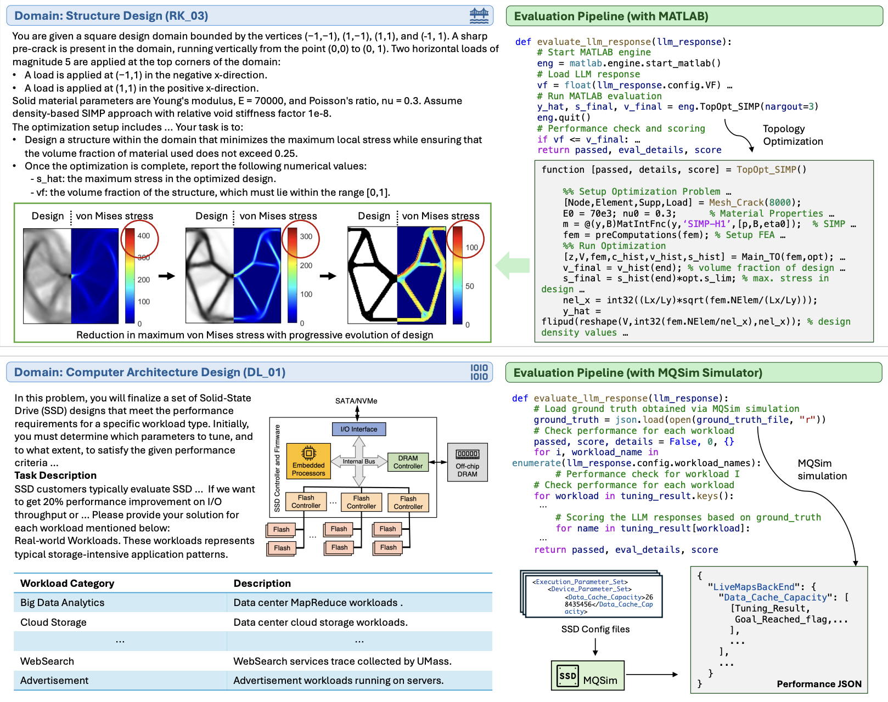
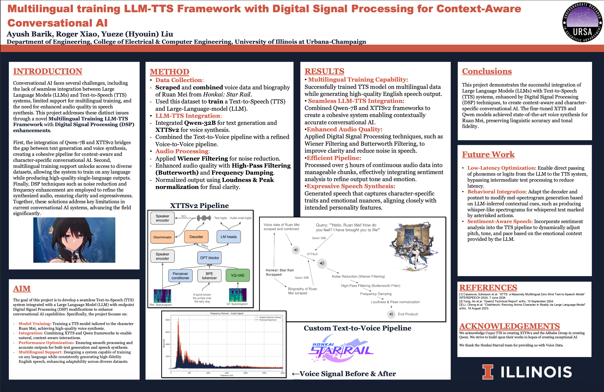

Projects
2025

Toward Engineering AGI: Benchmarking the Engineering Design Capabilities of LLMs
Research Paper
Conducted comprehensive benchmarking of Large Language Models' engineering design capabilities, evaluating their performance across various engineering design tasks and methodologies.
Skills: Python, Signal Processing, Computer Vision
YOLO Object Detector for PASCAL VOC
Ayush Barik, Christopher Kim
ECE494 Class Project
Implemented the YOLOv1 object detection algorithm from scratch. The project's core was developing the intricate YOLO loss function to simultaneously optimize for bounding box regression, objectness confidence, and class probabilities. Trained on the PASCAL VOC 2007 dataset, the model achieved a mean Average Precision (mAP) of over 0.5.
Skills: Python, PyTorch, Computer Vision, Object Detection, Deep Learning
Denoising Diffusion Models and Rectified Flow
Ayush Barik, Christopher Kim
ECE494 Class Project
Developed a UNet-based diffusion model from scratch, progressively adding time and class conditioning. Trained the model for conditional image generation on both MNIST and ImageNette. Also implemented and benchmarked Rectified Flow against the standard DDPM, comparing performance and inference speed.
Skills: Python, PyTorch, Deep Learning, Diffusion Models, UNet, Rectified Flow, Computer Vision
Real-Time QVGA Video Streaming with Filters on FPGA
Joanna Li, Ayush Barik
ECE385 Class Project
Engineered embedded quantized live video streaming pipeline on a Spartan-7 FPGA to transmit data from an OV7670 camera, optimized for low power (0.35W) and minimal resources (813 LUTs, 28 BRAM, 309 Flip-Flops). Implemented additional video filters and on-screen sprites.
Skills: SystemVerilog, Python
2024

Multilingual LLM-TTS Framework with Digital Signal Processing for Context-Aware Conversational AI
Ayush Barik, Roger Xiao, Yueze (Hyouin) Liu
Undergraduate Research Symposium
Developed a text-to-speech (TTS) framework integrating an LLM (Qwen-7B) with a voice model (XTTSv2) to create a context-aware, multilingual conversational AI. Trained the system on a custom, scraped dataset of the character Ruan Mei from Honkai: Star Rail. The text-to-voice pipeline uses Digital Signal Processing techniques, including Wiener and Butterworth filtering, to enhance audio quality and clarity.
Skills: Python, Text-to-Speech (TTS), Large Language Models (LLMs), Digital Signal Processing (DSP), Data Scraping